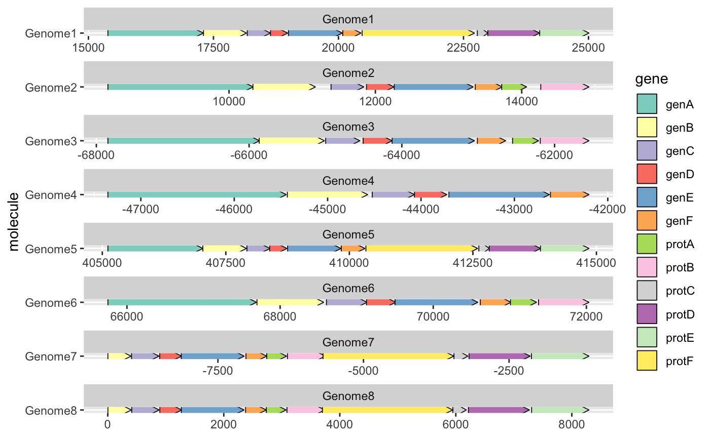
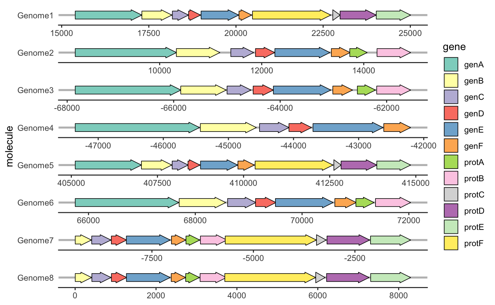
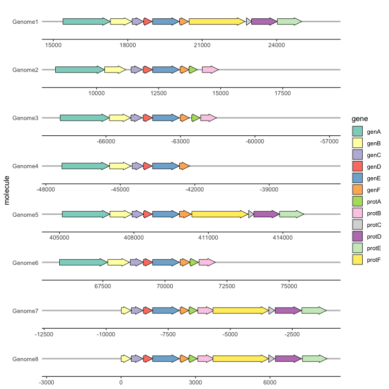
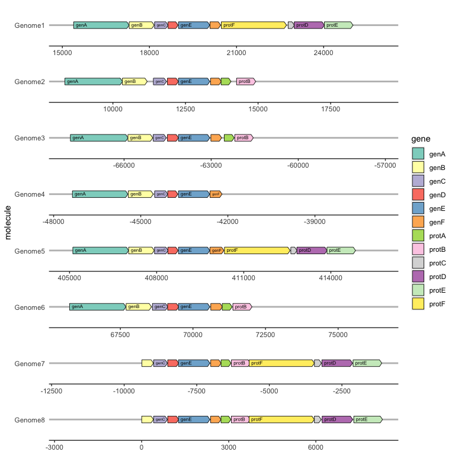
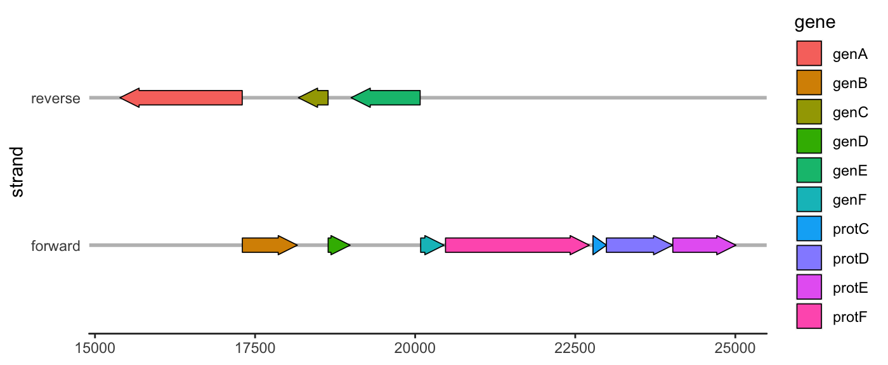
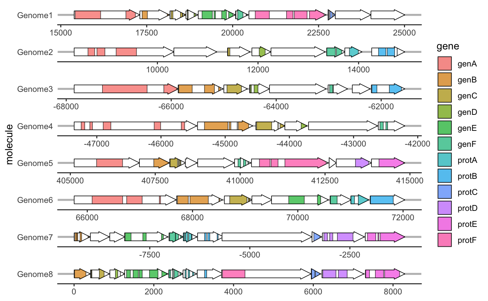

gggenes is a ggplot2 extension for drawing gene arrow maps.
Installing gggenes
Install the stable version of gggenes from CRAN:
If you want the development version, install it from GitHub:
Drawing gene arrows with geom_gene_arrow()
geom_gene_arrow() is a ggplot2 geom that represents genes with arrows. The start and end locations of the genes within their molecule(s) are mapped to the xmin and xmax aesthetics respectively. These start and end locations are used to determine the directions in which the arrows point. The y aesthetic must be mapped to the molecule(s). If you are drawing more than one molecule, and the numerical locations of the genes are not similar across molecules, you almost certainly want to facet the plot with scales = "free" to avoid drawing ridiculously large molecules with ridiculously tiny genes.
library(ggplot2)
library(gggenes)
ggplot(example_genes, aes(xmin = start, xmax = end, y = molecule, fill = gene)) +
geom_gene_arrow() +
facet_wrap(~ molecule, scales = "free", ncol = 1) +
scale_fill_brewer(palette = "Set3")
Beautifying the plot with theme_genes
Because the resulting plot can look cluttered, a ggplot2 theme theme_genes is provided with some sensible defaults.
ggplot(example_genes, aes(xmin = start, xmax = end, y = molecule, fill = gene)) +
geom_gene_arrow() +
facet_wrap(~ molecule, scales = "free", ncol = 1) +
scale_fill_brewer(palette = "Set3") +
theme_genes()
Aligning genes across facets with make_alignment_dummies()
Often you will want a certain gene to be vertically aligned across the faceted molecules. make_alignment_dummies() generates a set of dummy genes that if added to the plot with geom_blank() will extend the range of each facet to visually align the selected gene across facets.
dummies <- make_alignment_dummies(
example_genes,
aes(xmin = start, xmax = end, y = molecule, id = gene),
on = "genE"
)
ggplot(example_genes, aes(xmin = start, xmax = end, y = molecule, fill = gene)) +
geom_gene_arrow() +
geom_blank(data = dummies) +
facet_wrap(~ molecule, scales = "free", ncol = 1) +
scale_fill_brewer(palette = "Set3") +
theme_genes()
Labelling genes with geom_gene_label()
To label individual genes, provide a label aesthetic and use geom_gene_label(). geom_gene_label() uses the ggfittext package to fit the label text inside the gene arrows; see the ggfittext documentation for more details on how it resizes and reflows text to make it fit.
ggplot(
example_genes,
aes(xmin = start, xmax = end, y = molecule, fill = gene, label = gene)
) +
geom_gene_arrow(arrowhead_height = unit(3, "mm"), arrowhead_width = unit(1, "mm")) +
geom_gene_label(align = "left") +
geom_blank(data = dummies) +
facet_wrap(~ molecule, scales = "free", ncol = 1) +
scale_fill_brewer(palette = "Set3") +
theme_genes()
Reversing some genes with the optional forward aesthetic
Sometimes you might want to reverse the direction of some genes from that implied by xmin and xmax. For example, you might want to draw both a forward and reverse strand within each facet, and reverse the direction of all the genes on the reverse strand. The optional forward aesthetic is intended for this sort of situation.
If forward is TRUE (the default), or any value that coerces to TRUE such as 1, the gene will be drawn pointing in the normal direction, i.e. that implied by xmin and xmax. If forward is FALSE, or any value that coerces to FALSE such as -1, the gene will be drawn in the reverse of this implied direction. In the following example, the forward aesthetic has been used to reverse the direction of all genes on the reverse strand from that implied by xmin and xmax.
example_genes$direction <- ifelse(example_genes$strand == "forward", 1, -1)
ggplot(subset(example_genes, molecule == "Genome1"),
aes(xmin = start, xmax = end, y = strand, fill = gene,
forward = direction)) +
geom_gene_arrow() +
theme_genes()
Viewing subgene segments
We can highlight subgene segments, such as protein domains or local alignments, using geom_subgene_arrow().
This works similarly to geom_gene_arrow(), but in addition to xmin and xmax (which determine the gene boundaries), we need the aesthetics xsubmin and xsubmax to determine the subgene boundaries. geom_gene_arrow() will produce pretty arrowheads, as long as xmin >= xsubmin and xmax >= xsubmax for all subgenes (subgenes that break gene boundaries will be skipped with a warning).
The suggested usage is to use geom_gene_arrow() with no fill, and then add a subgene layer over this:
ggplot(example_genes, aes(xmin = start, xmax = end, y = molecule)) +
facet_wrap(~ molecule, scales = "free", ncol = 1) +
geom_gene_arrow(fill = "white") +
geom_subgene_arrow(data = example_subgenes,
aes(xmin = start, xmax = end, y = molecule, fill = gene,
xsubmin = from, xsubmax = to), color="black", alpha=.7) +
theme_genes()
To label subgenes, we can use geom_subgene_label(), which works similarly to geom_gene_label() with the major difference that it requires xsubmin and xsubmax aesthetics (not xmin and xmax).
ggplot(subset(example_genes, molecule == "Genome4" & gene == "genA"),
aes(xmin = start, xmax = end, y = strand)
) +
geom_gene_arrow() +
geom_gene_label(aes(label = gene)) +
geom_subgene_arrow(
data = subset(example_subgenes, molecule == "Genome4" & gene == "genA"),
aes(xsubmin = from, xsubmax = to, fill = subgene)
) +
geom_subgene_label(
data = subset(example_subgenes, molecule == "Genome4" & gene == "genA"),
aes(xsubmin = from, xsubmax = to, label = subgene),
min.size = 0
)